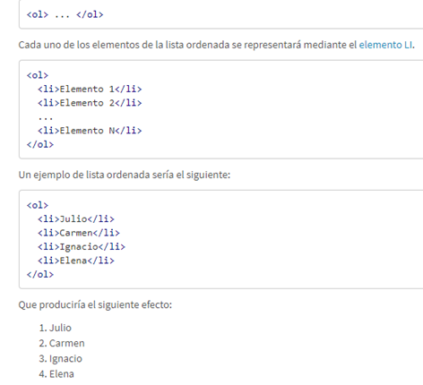
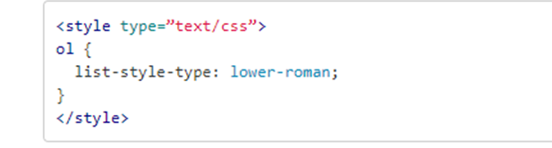
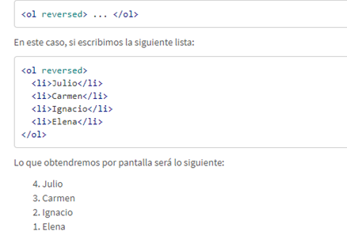
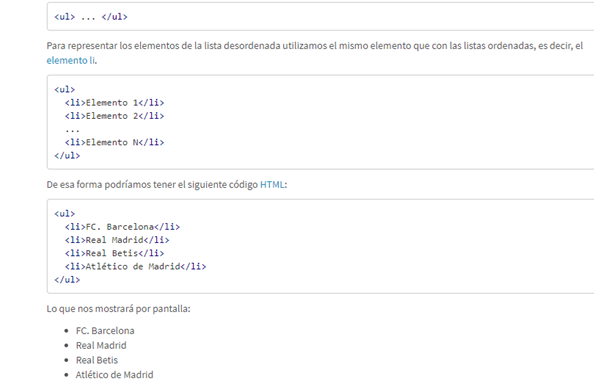
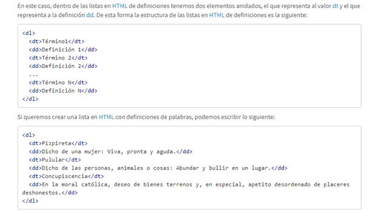

LISTAS HTML
Las listas en HTML nos permite crear conjuntos de elementos en forma de lista dentro de una página, todos los cuales irán precedidos, generalmente, por un guión o número. Los tipos de listas en HTML son los siguientes:
- Listas ordenadas
- Listas desordenadas
- Listas de definiciones
Listas ordenadas
Las listas en HTML ordenadas son aquellas que nos muestran los elementos de la lista en orden.
Para representar el orden tendremos los elementos numerados. Es decir, cada uno de los elementos
irá precedido de un número o letra que establezca su orden.
Las listas en HTML ordenadas se representan mediante el elemento OL.

Atributos start/type en HTML 4.01
Aunque en HTML 5 han vuelto a la especificación los atributos type y start hay que tener cuidado con ellos, ya que en ciertas versiones como HTML 4.01 fueron declarados obsoletos, por lo cual si usamos tipos de documentos HTML 4.01 strict podríamos tener un problema en su definición. Para estos casos (y para todos en general) podemos utilizar las hojas de estilo CSS de cara a dar estilo a las listas en HTML. De esta forma en CSS podemos escribir lo siguiente:

Listas en orden inverso: reversed
En HTML 5 aparece el atributo reversed para las listas ordenadas. El atributo reversed nos permite invertir el orden de la lista. Es decir, realiza la numeración de la lista de forma inversa. Para utilizarlo simplemente indicamos el atributo reversed sobre el elemento OL.

Lista Desordenada
Las listas desordenadas en HTML nos sirven para mostrar los elementos sin ningún tipo de orden, simplemente precedidos por una viñeta que puede ser un punto, un cuadrado,… Para definir una lista desordenada en HTML utilizamos el elemento ul.
Lista de definiciones
Las listas en HTML de definiciones en HTML nos sirven para montar listas en las que tenemos la estructura valor y definición. Suelen ser listas para definir términos, como si fuese un diccionario, si bien pueden ser cualquier par valor-definición. Las listas en HTML de definiciones en HTML se construyen mediante el elemento dl.
Referencia general APA